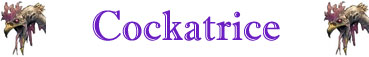

Tocco Pietrificante;

|
|
Ambiente/Habitat | Colline Rocciose |
| Frequenza | Uncommon | |
| Organizzazione | Gruppo | |
| Periodo di Attività | Qualsiasi | |
| Dieta | Carnivora | |
| Intelligenza | Animal (1) | |
| Punti Combattimento | Nessuno | |
| Tesoro | Nessuno | |
| Allineamento Dominante | Neutrale | |
| Numero di Apparizione | 1d20: (1-6) 1 (7-11) 2 (12-15) 3 (16-18) 4 (19-20) 5 | |
| Classe Armatura | 4 [10 base, 3 corazza, -3 destrezza] | |
| Movimento | 4 esagoni, volare 12 esagoni | |
| Dadi Vita | 5 | |
| Thac0 | 15 | |
| Numero di Attacchi | Becco | |
| Danni | 1d3+1 (punta) | |
| Poteri Offensivi | Istinto Predatorio; Tocco Pietrificante; |
|
| Poteri Difensivi | Schivata; | |
| Poteri Generici | Evasione Migliorata | |
| Vulnerabilità | Nessuna | |
| Resistenza alla Magia | Nessuna | |
| Sensi | Oscurovisione; Sensi Superiori | |
| Dimensioni | Small (1 m. lungo) | |
| Morale | Steady (12) | |
| Valore in Punti Esperienza | 474 |
|
TIRI SALVEZZA DELLA CREATURA |
|||||||
| CORAGGIO | ENERGIA VITALE | MAGIA | MALATTIA | MENTE | RIFLESSI | ROBUSTEZZA | VELENO |
| 0 | 0 | 0 | 0 | 0 | +10% | 0 | 0 |
| 45 | 50 | 59 | 44 | 57 | 39 | 54 | 48 |
Descrizione
Questo volatile è all'incirca della taglia di un tacchino. Possiede la testa e il corpo di un un grosso gallo, due ali di un pipistrello dal colore verdastro ed una lunga coda da lucertola. l suoi occhi brillano di una sinistra luce giallastra. Una cockatrice maschio è munita di cresta e bargigli, proprio come un gallo. Le femmine, molto più rare dei maschi, si differenziano soltanto per la mancanza della cresta. Una cockatrice pesa circa 25 kg.
Combat
Questi agili predatori si aggirano tra le colline di giorno in cerca di prede. Sono dinosauri voraci che sfruttano la loro velocità per raggiungere le vittime ed attaccarle in branco. Solitamente, queste creature attaccano, nel maggior numero possibile la medesima vittima. Preferibilmente costoro attaccano per prima la creatura che appare meno difesa, più debole o ferita. Solitamente, una volta abbattuta una vittima questi dinosauri, se non disturbati, si ciberanno della carcassa lasciando allontanare le altre prede. Ovviamente, però, si difenderanno in branco in caso di attacchi od azioni di disturbo.
ISTINTO PREDATORIO (Moderate Special Ability): La creatura possiede un forte istinto predatorio, per tale motivo costei riceve un bonus costante di +1 alla Thac0 con i suoi attacchi.
TOCCO PIETRIFICANTE [BECCO] (Superior Special Ability): Se la creatura colpisce una vittima con l'attacco selezionato, la stessa dovrà immediatamente superare un tiro salvezza su robustezza. Se il tiro salvezza fallisce parte del corpo della vittima si disidraterà immediatamente assumendo la consistenza della creta e sgretolandosi. In particolare, la vittima subirà una perdita di punti ferita pari al 20% dei suoi punti ferita massimi (arrotondando il danno per eccesso). Si noti che questi danni non possono essere curati magicamente né con magie basate su energia positiva, né con magie di tipo rigenerativo. La vittima, infatti, recupererà lentamente la perdita di punti ferita subita in questo modo solo al ritmo di un punto ferita al giorno (non essendo richiesto alcun riposo questo punto ferita recuperato si cumulerà con la cura delle altre eventuali diverse ferite subite dalla creatura). Questo potere ha effetto solo sulle creature dotate di corpo organico di tipo animale.
SCHIVATA (Lesser Special Ability): La creatura è particolarmente agile. Una volta al round, infatti, la stessa potrà provare a schivare un qualsiasi attacco ricevuto in corpo a corpo da una posizione frontale che non sia di dimensioni superiori a large. La creatura ha il 20% di riuscire a schivare il colpo in arrivo. Questo tiro percentuale va effettuato prima del tiro per colpire effettuato dall'avversario. Se l'avversario effettua un 20 naturale sull'attacco che la creatura era riuscita a schivare lo stesso andrà comunque a segno ma senza conseguenze critiche. Al tiro percentuale andranno applicate le penalità previste per il mantenimento della concentrazione in situazioni di combattimento particolari (come ad esempio incapacitato). La creatura non potrà provare a schivare in alcun caso attacchi a distanza.
EVASIONE MIGLIORATA (Moderate Special Ability): Questa creatura è in grado di spostarsi così agilmente da poter evadere gli attacchi alle spalle dei propri nemici. In particolare, questa creatura potrà utilizzare la competenza Evasive Fighting disponendo di una prova complessiva pari a 15.
Habitat/Society
La Cockatrice è famigerata per la sua capacità di trasformare la carne in pietra. La percentuale di incontrare un esemplare maschio è pari al 65% contro il 35% di possibilità di incontrare un esemplare femmina (questo tiro va ripetuto per ogni esemplare incontrato). La vita massima di una Cockatrice arriva ai 30 anni con una vita media di poco più di 20 anni. In una tana di Cockatrice vi è il 25% di possibilità di trovare 1d3 uova. Per ogni uovo di Cockatrice trovato vi è il 65% che lo stesso si possa schiudere nel giro di 3d10 giorni, se l'uovo non è covato dalla madre questa percentuale scende al 50% (sempre che siano adottate tutte le precauzioni del caso). Le uova che non si schiudono sono solitamente mangiate dalla stessa madre. Un piccolo di Cockatrice nutrito regolarmente diventerà un adulto nel giro di 2d3+3 mesi. Solo una volta raggiunto l'età adulta il becco della Cockatrice acquisterà il potere pietrificante.
La Cockatrice può volare ma non è molto abile in questo genere di movimento. Si può considerare possedere una manovrabilità pari alla classe C. Questa creatura, inoltre, si stanca molto in volo essendo costretta a riposare per almeno un'ora (senza volare) ogni trenta minuti di volo effettuato. Per tale motivo, la Cockatrice non raggiunge quasi mai elevate altitudini limitandosi a volare rasente al terreno per attaccare le proprie prede o per sfuggire ai propri nemici.
Ecology
Un uovo di Cockatrice ha
un valore medio di mercato di 250 monete d'oro, un piccolo catturato ha un
valore medio di mercato che varia da 400 a 600 monete d'oro (a seconda della sua
grandezza), mentre un esemplare adulto catturato ha un valore medio di mercato
di 1000 monete d'oro. Ovviamente
questo articolo può interessare solo a particolari acquirenti come maghi in
cerca dei rari componenti mistici della creatura, collezionisti di creature
esotiche o di guardiani particolari.
Mystical Resource Sourge
(Coda) Quantità: 1, Presenza 25% - Scuola di Magia:
Enchantment
- Qualità della Risorsa:
Common.
Mystical Resource Sourge
(Lingua) Quantità: 1, Presenza 25% -
Effetto Particolare:
Pietra, Roccia e Terra
- Qualità della Risorsa:
Uncommon.